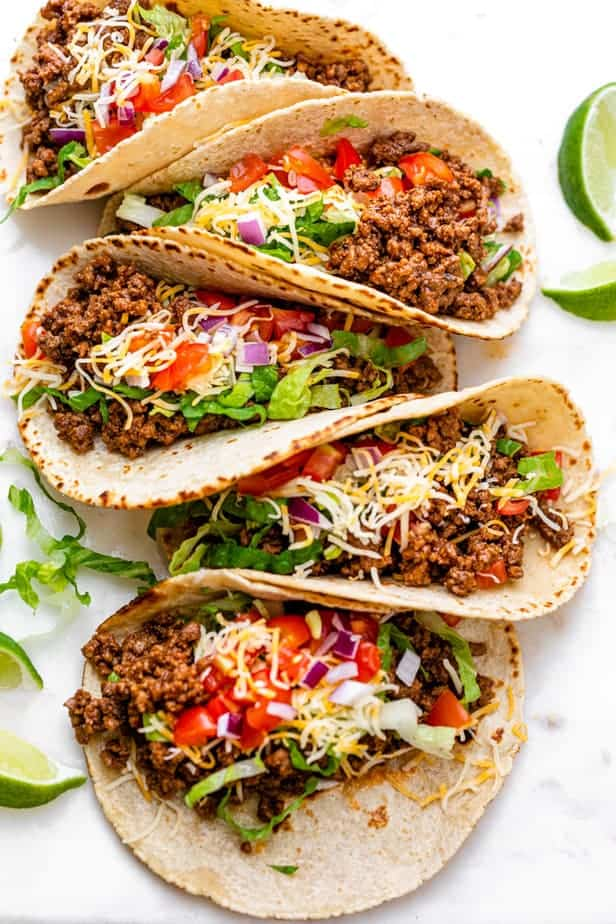

Ground Beef Tacos

Description
These Ground Beef Tacos are filled with juicy flavorful taco meat made with my homemade taco seasoning - it's an easy weeknight recipe for the whole family!
Ingredients
- 1 tablespoon olive oil
- 1 pound lean ground beef
- ½ teaspoon salt
- ¼ teaspoon cracked black pepper
- 2 teaspoons chili powder
- 2 teaspoons cumin
- ½ teaspoon oregano
- ½ teaspoon garlic powder
- ½ teaspoon salt
- ½ teaspoon black pepper
- 2 tablespoons tomato paste
- ½ cup water
For Serving the Tacos
- 8 Corn or flour tortillas
- Lettuce finely chopped
- Shredded Mexican cheese blend or cheddar cheese
- Tomatoes chopped
- Red onions chopped
Steps
- Heat the olive oil in skillet over medium high heat. Add the ground beef and cook until browned, about 5-7 minutes. Drain any fat.
- Add the chili powder, cumin, dried oregano, garlic powder, salt, pepper, tomato paste and water. Stir to combine and continue cooking over medium-low heat until the sauce has thickened, about 3-5 minutes
- Serve warm over tortillas with lettuce, tomatoes, cheese and red onions, or your other desired toppings.
Home